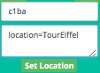

Parametrage des équipements¶
Certains équipements possèdent des paramètres qu’il est possible de changer. Je donne ici l’exemple du champ « Location ». Mais cette fonction n’est pas nécessaire dans Abeille. Seul des utilisateurs avancés pourrraient jouer avec.
Attention
La norme le permet mais très peu d’équipement le supportent.
Lieux (Location)¶
Récupérer¶
Récupérer le champ Lieux/Location
Depuis la ruche, utiliser la commande GetLocation

Mettre l’adresse de l objet dans le premier champ et laisser vide le second sauf cas particulier.
Définir¶
Définir le lieux/location
Depuis la ruche, utiliser la commande SetLocation
Mettre l’adresse de l’objet dans le premier champ et la nom du lieux que vous souhaitez dans le second.